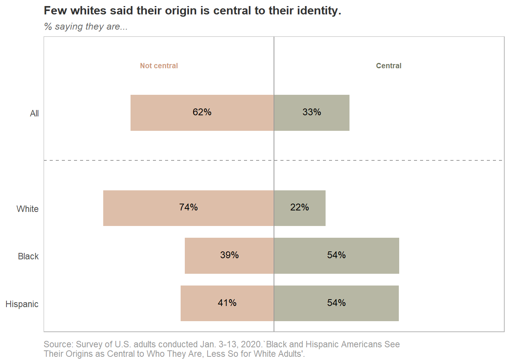

The Pew Research Center recently published the results of its 2020 survey of 3,535 adults, exploring the importance of cultural origins among various racial/ethnic groups. The data is available (with a free account) from the Pew site. Pew’s main finding was that Black and Hispanic adults are more likely that White adults to feel connected to their roots and regard them as central to their identity. I wonder whether this finding holds generally throughout the Black and Hispanic communities, or whether the importance of roots is also a function of other factors, such as political ideology, level of education, and age.

I found that the short answer is a qualified “yes”. There is evidence that females are more likely to feel a strong connection and that origins are central to their identity. Having at least a college education was not associated with feeling a strong connection, but it was negatively associated with cultural origins being central to identity. Neither geographic location nor political ideology were significantly associated with either connection nor centrality.
However, the effects of these factors were much smaller than the effect of race/ethnicity. Hispanics are about five times as likely as Whites, and Blacks are three times as likely as Whites, to feel a strong connection to their origins.